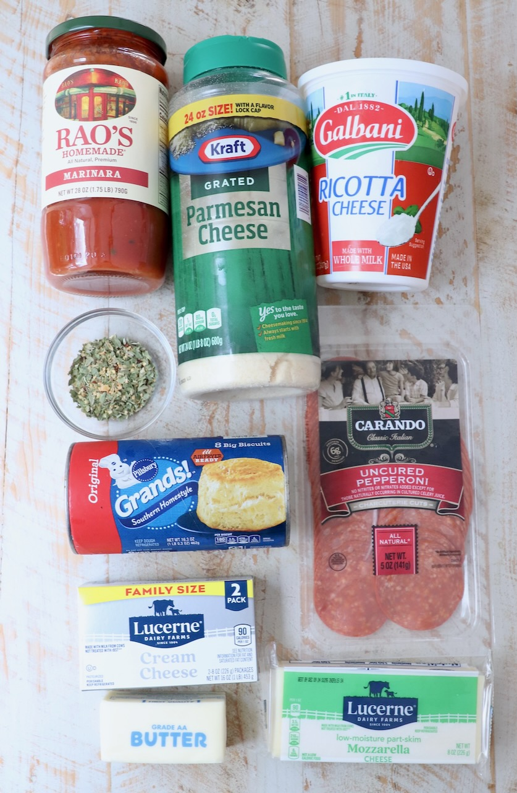

16.3 ounce can Grands biscuit dough, 8 count ¼ cup melted butter
2 teaspoons parmesan cheese, grated 1 teaspoon Italian seasoning, click link for the recipe
- FOR THE PIZZA DIP
8 ounces cream cheese, softened
1 cup ricotta cheese
3 teaspoons Italian seasoning, divided
1 cup marinara sauce, or pizza sauce
1 ½ cups mozzarella cheese, grated
8 slices pepperoni, quartered (optional topping)
